Long Term Retention
Generate background traffic
-
On the raptor machine, navigate to the directory where the traffic generator is located.
cd /opt/guardium_tz_bootcamp_automation/upload/guardium_notes_dbtraffic -
Start traffic generation on raptor (PostgresSQL).
1 2 3
source venv/bin/activate guardium-notes-dbtraffic --config config/pgsql.yaml run --duration 600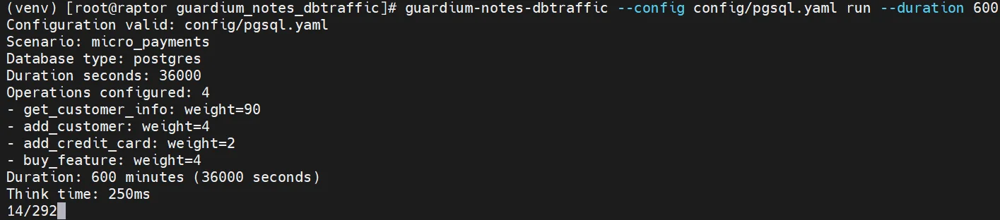
- Confirm that traffic is visible in the Full SQL (Training) report on the Training dashboard on the coll1. Keep this session opened to generate traffic in the background.
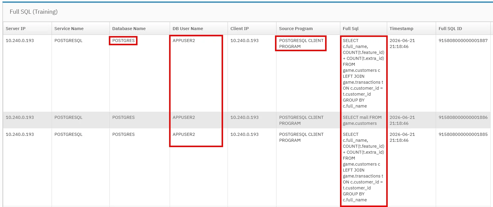


Setup S3 bucket for LTR (seaweedFS)
-
First, on the raptor, we will create certificates that will be used by the seaweedFS service. We start with the directory structure.
1 2 3
mkdir -p /opt/seaweedfs/{data,certs,nginx} mkdir -p /opt/seaweedfs/certs/ca -
Create the CA certificate and copy it to the
/home/seaweedfssubdirectory1 2 3
openssl genrsa -out /opt/seaweedfs/certs/ca/ca.key 4096 openssl req -x509 -new -nodes -key /opt/seaweedfs/certs/ca/ca.key -sha256 -days 3650 -subj "/CN=seaweedFS-Root-CA" -out /opt/seaweedfs/certs/ca/ca.crt -
Add the new CA certificate to the trusted certificates on the raptor.
1 2 3
cp /opt/seaweedfs/certs/ca/ca.crt /etc/pki/ca-trust/source/anchors/ update-ca-trust -
Create the private key for the seaweedFS service certificate and then generate the CSR.
1 2 3
openssl genrsa -out /opt/seaweedfs/certs/tls.key 4096 && chmod 600 /opt/seaweedfs/certs/tls.key openssl req -new -key /opt/seaweedfs/certs/tls.key -out /opt/seaweedfs/seaweedfs.csr -subj "/CN=seaweedfs.demo.guardium" -addext "subjectAltName=DNS:raptor.demo.guardium,IP:<raptor_IP_address>" -
Create the seaweedFS certificate based on the new CA and the CSR. Insert the correct IP address of raptor machine!
openssl x509 -req -in /opt/seaweedfs/seaweedfs.csr -CA /opt/seaweedfs/certs/ca/ca.crt -CAkey /opt/seaweedfs/certs/ca/ca.key -CAcreateserial -out /opt/seaweedfs/certs/tls.crt -days 3600 -sha256 -copy_extensions copy -
Create file with full certificate chain and set the correct access to files in
seaweedfsdirectory.1 2 3 4 5 6 7
cat /opt/seaweedfs/certs/tls.crt /opt/seaweedfs/certs/ca/ca.crt > /opt/seaweedfs/certs/fullchain.crt chmod 644 /opt/seaweedfs/certs/* chmod 600 /opt/seaweedfs/certs/tls.key /opt/seaweedfs/certs/ca/ca.key chcon -Rt container_file_t /opt/seaweedfs -
Create nginx configuration file
/opt/seaweedfs/nginx/nginx.conf.events { worker_connections 1024; } http { upstream seaweedfs_s3 { server 127.0.0.1:8332; } server { listen 8333 ssl; server_name raptor.demo.guardium _; ssl_certificate /etc/nginx/certs/fullchain.crt; ssl_certificate_key /etc/nginx/certs/tls.key; # Zwiększenie limitu uploadu dla S3 client_max_body_size 0; location / { proxy_pass http://seaweedfs_s3; proxy_set_header Host $http_host; proxy_set_header X-Real-IP $remote_addr; proxy_set_header X-Forwarded-For $proxy_add_x_forwarded_for; proxy_set_header X-Forwarded-Proto $scheme; # Wymagane dla streamingu dużych plików S3 proxy_http_version 1.1; proxy_request_buffering off; } } } -
Create file to define s3admin user -
/opt/seaweedfs/s3.json. Set you own secret key value.{ "identities": [ { "name": "s3admin", "credentials": [ { "accessKey": "s3admin", "secretKey": "<your s3 secret>" } ], "actions": [ "Admin", "Read", "Write", "List" ] } ] } -
Create
/opt/seaweedfs/security.tomlfile with key. As a key used random value, for example generate by command:openssl rand -hex 32/opt/seaweedfs/security.tomlcontent:[jwt.filer_signing] key = "<random hex value>" [jwt.filer_signing.read] key = "<random hex value>" -
Set correct rights to nginx config file.
1 2 3 4 5 6
chmod 644 /opt/seaweedfs/nginx/nginx.conf chmod 644 /opt/seaweedfs/s3.json chmod 644 /opt/seaweedfs/security.toml chcon -t container_file_t /opt/seaweedfs/nginx/nginx.conf chcon -t container_file_t /opt/seaweedfs/s3.json chcon -t container_file_t /opt/seaweedfs/security.toml -
Create quadlet file for seaweedfs service -
/etc/systemd/system/seaweedfs-stack.service.[Unit] Description=SeaweedFS S3 + Nginx TLS Proxy Stack After=network-online.target Wants=network-online.target [Service] Restart=always TimeoutStartSec=120 ExecStartPre=-/usr/bin/podman pod rm -f seaweedfs-pod ExecStartPre=/usr/bin/podman pod create --name seaweedfs-pod -p 8333:8333 -p 9333:9333 ExecStartPre=/usr/bin/podman run -d --pod seaweedfs-pod --name seaweedfs-server \ -v /opt/seaweedfs/data:/data:z \ -v /opt/seaweedfs/s3.json:/etc/seaweedfs/s3.json:ro,z \ -v /opt/seaweedfs/security.toml:/etc/seaweedfs/security.toml:ro,z \ chrislusf/seaweedfs:latest server -dir=/data -filer -s3 -s3.port=8332 -s3.iam.config=/etc/seaweedfs/s3.json ExecStartPre=/usr/bin/sleep 2 ExecStart=/usr/bin/podman run --rm --pod seaweedfs-pod --name seaweedfs-proxy \ -v /opt/seaweedfs/nginx/nginx.conf:/etc/nginx/nginx.conf:ro,z \ -v /opt/seaweedfs/certs:/etc/nginx/certs:ro,z \ docker.io/library/nginx:alpine nginx -g "daemon off;" ExecStop=/usr/bin/podman pod stop seaweedfs-pod ExecStopPost=/usr/bin/podman pod rm -f seaweedfs-pod [Install] WantedBy=multi-user.target -
Open the TLS port (8333).
1 2 3
firewall-cmd --permanent --add-port=8333/tcp firewall-cmd --reload -
Now we can start the seaweedFS container.
1 2 3 4 5
systemctl daemon-reload systemctl enable --now seaweedfs-stack systemctl start --now seaweedfs-stack -
Check TLS connection to service.
openssl s_client -connect raptor.demo.guardium:8333 -servername raptor.demo.guardium </dev/null 2>/dev/null | openssl x509 -noout -text | grep -E "(Issuer:|Subject:|Not After|DNS:|IP Address:)"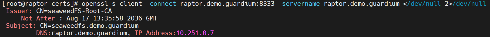
-
Install the AWS client.
cd curl "https://awscli.amazonaws.com/awscli-exe-linux-x86_64.zip" -o "awscliv2.zip" unzip awscliv2.zip ./aws/install aws --version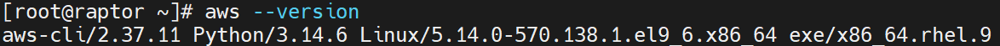
-
Configure access to seaweedFS.
profile parameters:
- AWS Access Key ID: s3admin
- AWS Secret Access Key: <secret key defined in point 8>
- Default region name: us-east-1
- Default output format: json
1 2 3
aws configure --profile seaweed aws configure set profile.seaweed.ca_bundle /opt/seaweedfs/certs/ca/ca.crt -
Create an S3 bucket for LTR purposes (name it guardium-ltr)
aws --profile seaweed --endpoint-url https://raptor.demo.guardium:8333 s3 mb s3://guardium-ltr aws --profile seaweed --endpoint-url https://raptor.demo.guardium:8333 s3 ls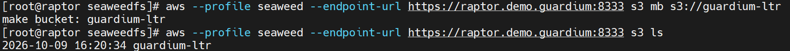


Setup LTR node
-
Although the LTR functionality does not require activation via a specific feature flag, the mechanism itself must be enabled. In the cm UI, navigate to the License view and verify that the extensions appropriate for your Guardium version are available.
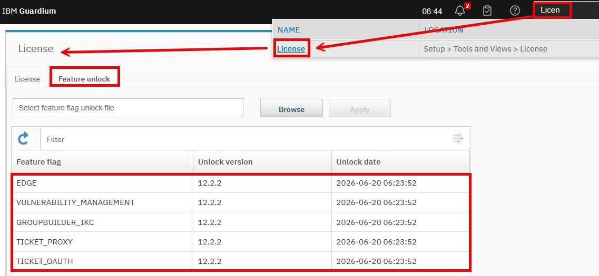
-
Check the unit type on appnode1. As a cli user execute:
show unit type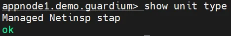
-
If the appliance is still of type Managed Netinsp stap, change it to app-node using command below. The command requires a system restart—confirm by entering
y.store unit type app-node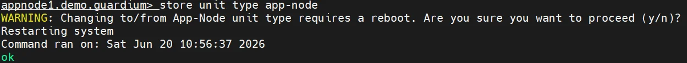
-
Re-login and confirm that the appliance is now set as Managed App-Node.
show unit type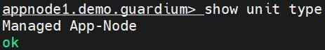
-
Now install on appnode1 as a cli user the patch that enables the LTR functionality.
patch installation values:
- Host: raptor.demo.guardium
- User: root
- Path: /opt/guardium_tz_bootcamp_automation/upload/source_files/appliances/extensions/SqlGuard-12.0p90230_datalake_Jun_15_2026.tgz.enc.sig
- Port: press 2223
- Password: <root password on raptor>
After downloading the patch file, the command will prompt its installation. Enter the patch number – 1 – and confirm with Enter.
store system patch install scp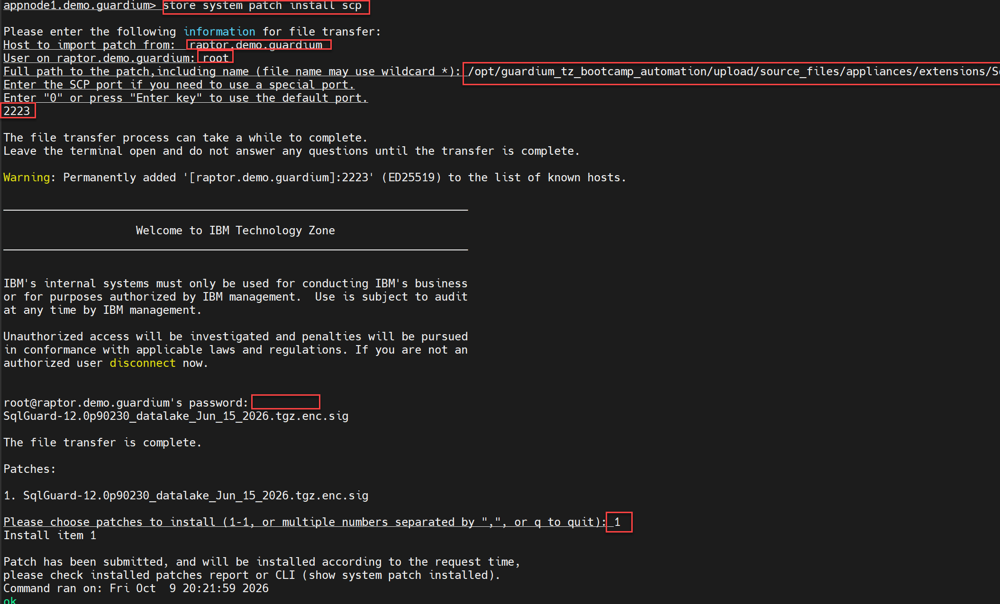
-
Monitor the installation using the command below until the patch installation is confirmed.
show system patch install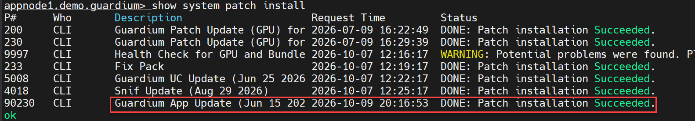
-
Install the LTR services on appnode1 (restart cli session).
store datalake install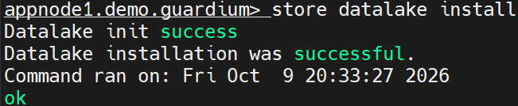
-
Set the size of the LTR services.
store datalake all_in_one xxsmall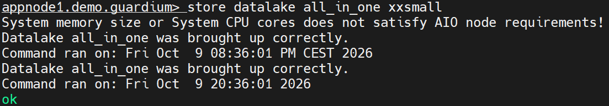
-
Start LTR services
store datalake service start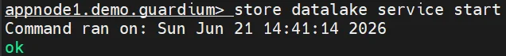
-
Check the status of the services, we expect status 0
show datalake status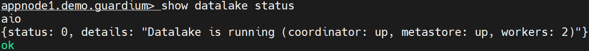


Central Manager setup
-
First, we need to import the CA certificate used by seaweedFS. To do this, on the cm run the command below and paste the certificate located on the appnode in the file
/opt/seaweedfs/certs/ca/ca.crt.store certificate application datalake s3 console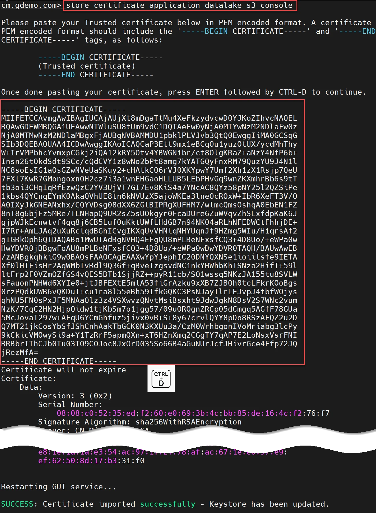
-
Verify that the certificate is visible
show certificate application datalake s3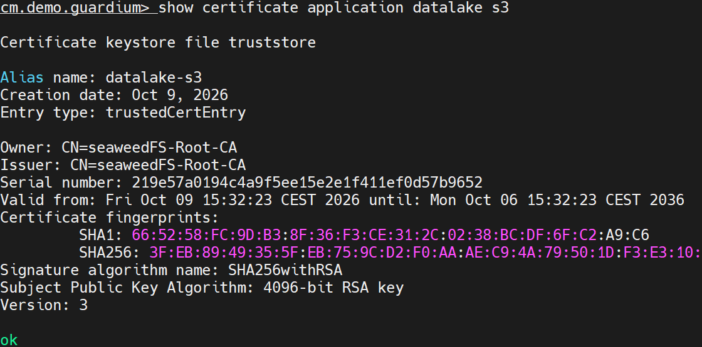
-
We now need to distribute the certificate used by the cm and LTR to all appliances in the environment.
distribute application certificate datalake all_managed --metastore_unit=appnode1.demo.guardium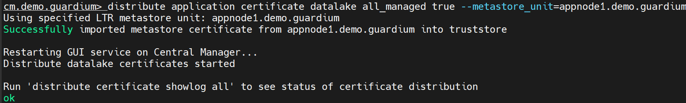
-
This takes some time, so you need to monitor the synchronization process with the command below (we expect the toolnode to have both certificates downloaded).
distribute certificate showlog all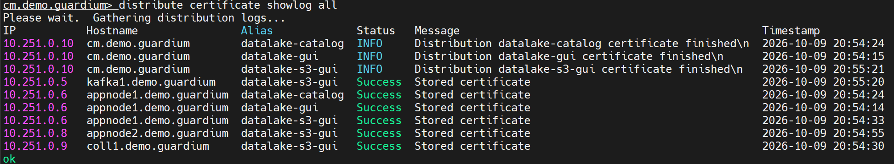
-
Configure the connection to the S3 bucket. You need to enter the seaweeFS keystore password used when configuring the S3 service. The command requires some time to complete.
grdapi configure_complete_cold_storage protocol="CUSTOM" objectStorageEndpoint="https://raptor.demo.guardium:8333" accessKey=s3admin secretKey="<strong_admin_password>" dataBucket=guardium-ltr resultSchema="datalake_reports" region="US_EAST_1" coldCatalogEndpoint="https://appnode1.demo.guardium:8443" coldCatalogSchema="datalake" coldStorageName="datalake" queryEngineHost="appnode1.demo.guardium" debug=3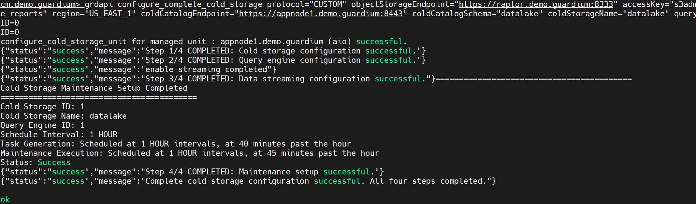
-
Finally, check list of ltr nodes and cold storages.
1 2 3
grdapi get_cold_storage_app_nodes grdapi list_cold_storages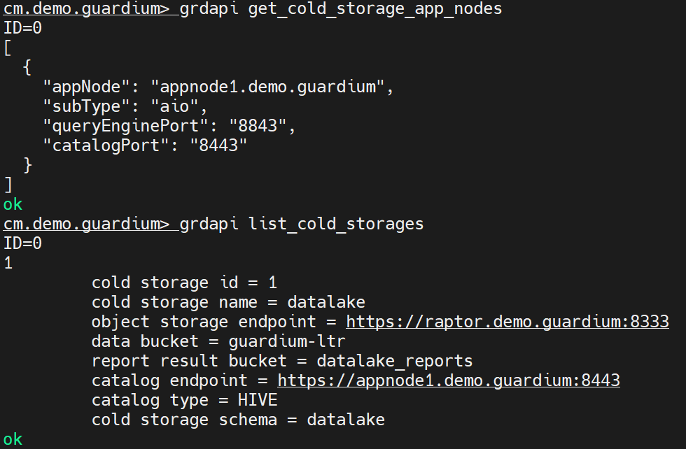


Configuring system to use LTR data
-
To monitor the process of transferring data from collectors to LTR, create a copy of the default Datamart Extraction Log report. Open on the cm UI the standard report and use the edit icon . Choose the option to create a copy of the report.
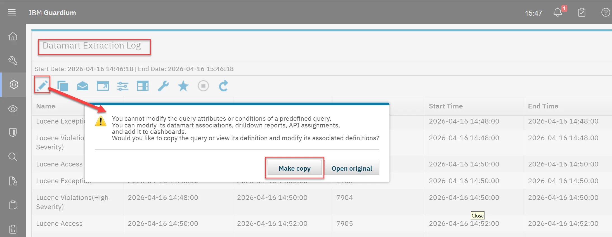
-
Name the report LTR Datamart Extraction, then add descending sorting by Datamart Run Id and add an additional condition so that only Datamart Name containing the word %Export% in the name are displayed. Save the modified report.
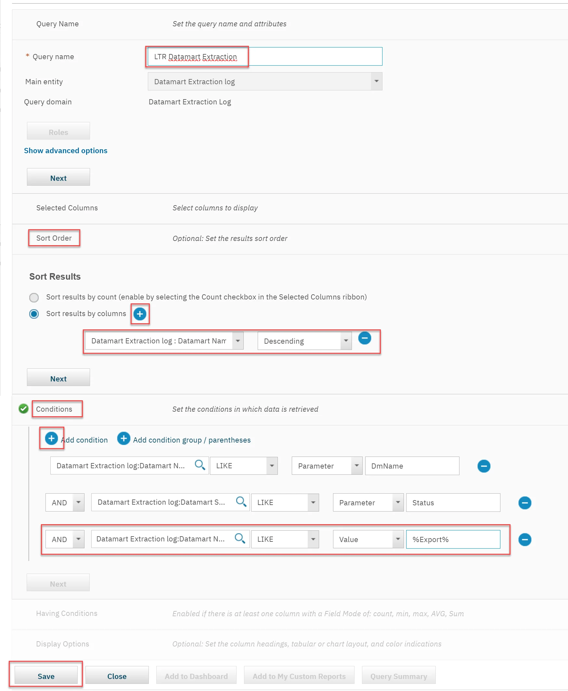
-
Next, create a new dashboard named LTR and add to it the report we just created – LTR Datamart Extraction,
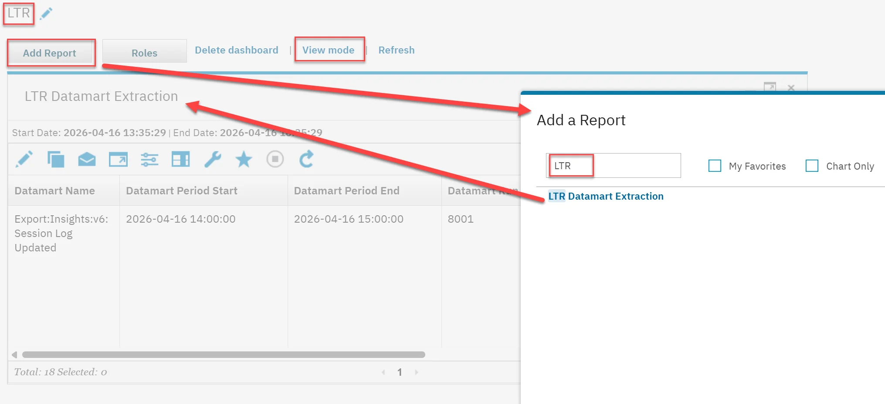
-
Add to LTR dashboard three more reports: Cold Storage Ingestion Logs, Cold Storage Maintenance Logs and Scheduled Jobs
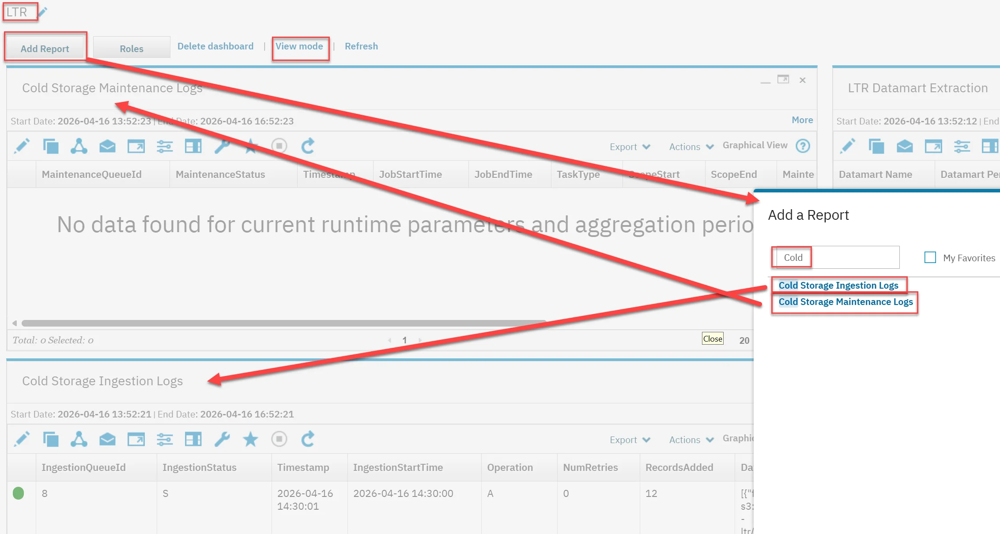
-
Open the Scheduled Jobs report in the dashboard and edit the Runtime Parameters. Select the coll1 as the data source.
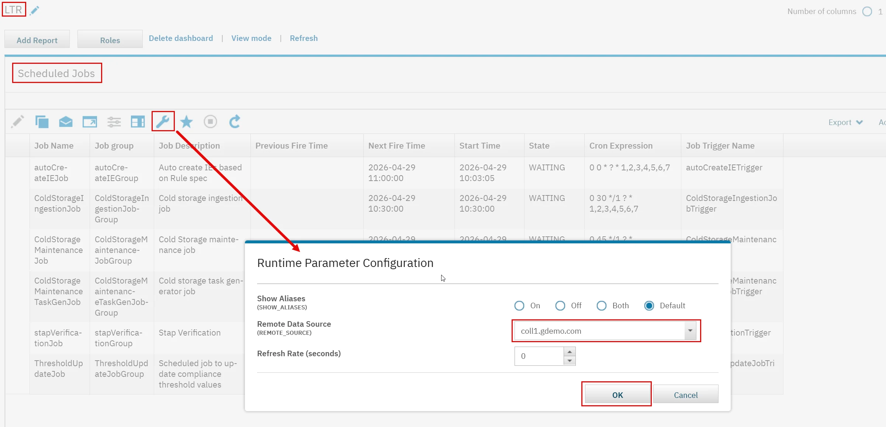
-
A list of batch jobs running on the coll1 will be displayed in the report. Among them, there will be activities related to data extraction and transferring the data to the seaweedFS server. The job names will start with Export:Insights:v6. The Next Fire Time column indicates when the data will be prepared and when we should expect the data to appear in LTR.
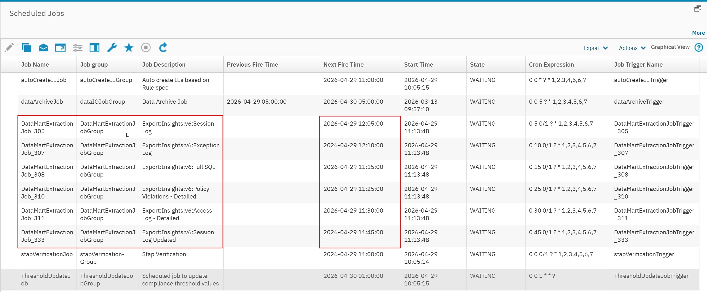
-
In the cli session on the coll1, run the command below and review the datamart definitions. It is executed every hour, and the data is sent to the seaweedFS server.
grdapi get_datamart_info datamart_name="Export:Insights:v6:Session Log"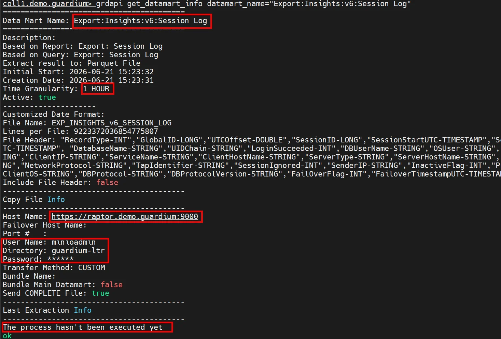


Use LTR data
-
A few hours after configuring LTR, we should be able to report on the stored data. First, let’s check the datamart status again from the cli on the coll1. This time, the Extraction Log section should contain information about a file in Parquet format that was sent to the seaweedFS server.
grdapi get_datamart_info datamart_name="Export:Insights:v6:Session Log"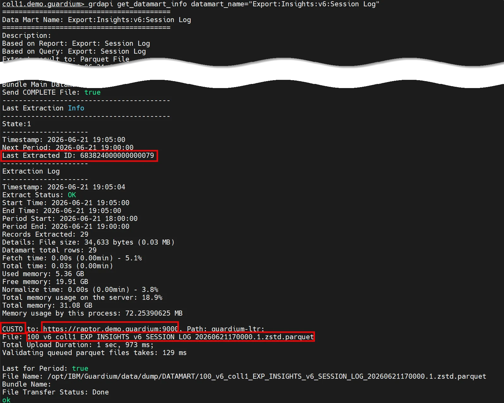
-
Open the LTR dashboard on the cm, and within it open the Scheduled Jobs report with reference to the coll1 data. Observe that the jobs related to the datamarts are being executed according to the scheduler.
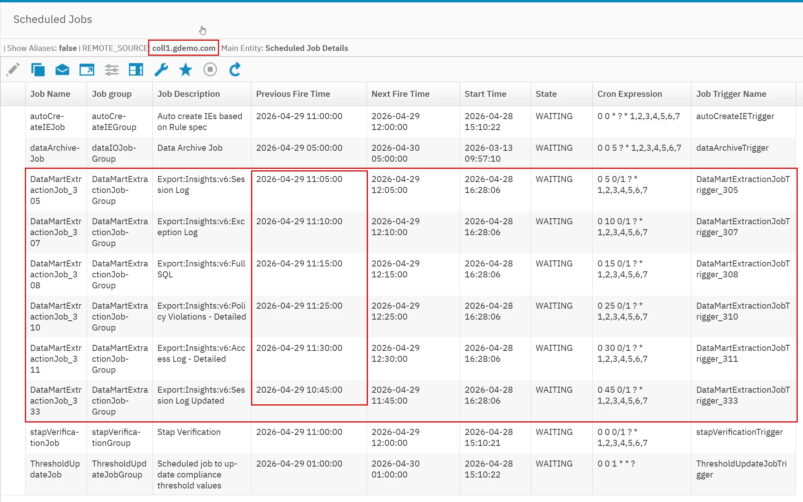
-
Switch to the LTR Datamart Extraction report in the dashboard and select the coll1 as the data source. Observe that each job execution is recorded in detail and includes information about how many records were transferred.
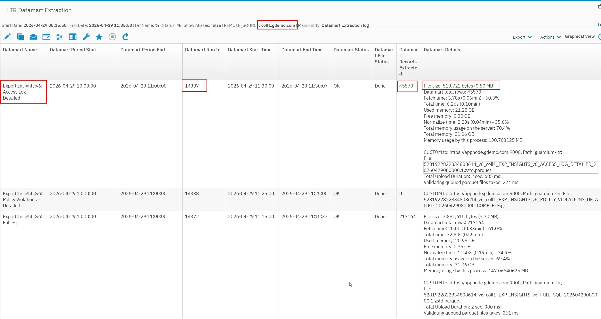
-
The Cold Storage Ingestion Logs report indicates whether the datamart transferred from the coll1 has been processed and whether the data is ready for use.
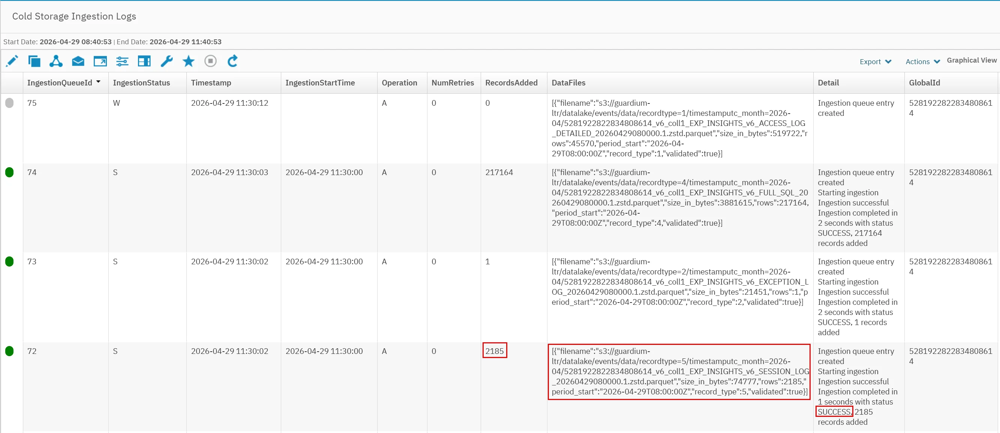
-
Let’s verify whether the data stored in seaweesFS can be reported from the cm. In the cm UI, select the new view – Data Lake Reports. It contains several predefined reports. Proceed to run the Data Lake Connection profiling list by selecting Edit from menu at the end of the row with its name.
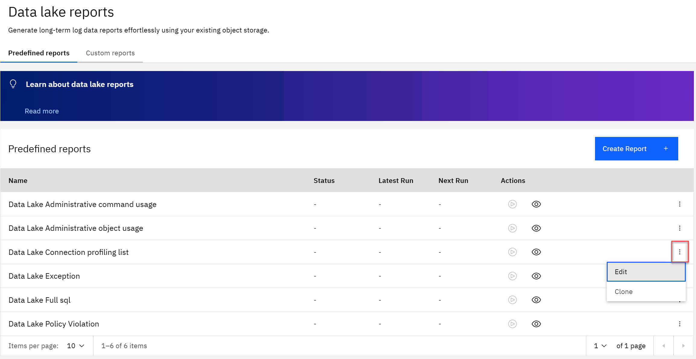
-
In the Define Report window, select Custom time frame and use the available controls to define the report timeframe (from today until tomorrow). Then click Next.
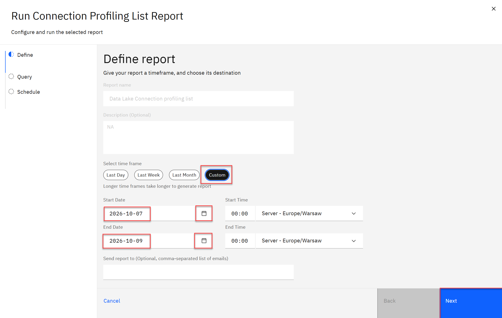
-
On the next page, you can manually modify the query. Since we are running a predefined report, the query body is disabled and cannot be edited. For customized queries, you will be able to adjust the report according to your specific requirements. Press Next.
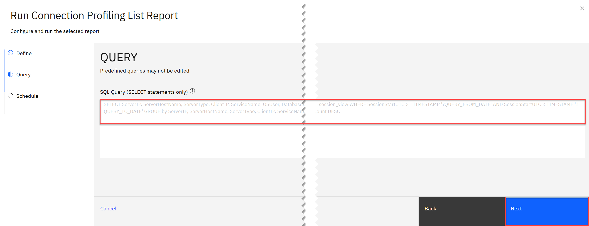
-
The next step of the report configuration allows you to schedule report execution. In this lab, we want to run the report ad hoc, so we will skip the scheduling options and use Save Report immediately.
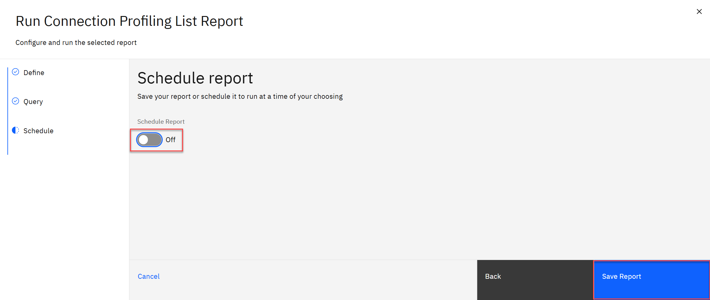
-
To generate the report, click the icon. This starts the process of retrieving data from the files stored in the S3 bucket, extracting the contents, and processing the data according to the query definition. The progress of the operation is indicated by dynamically updated status values such as Running and Complete. Once the report has been successfully generated, click the icon to view the results.
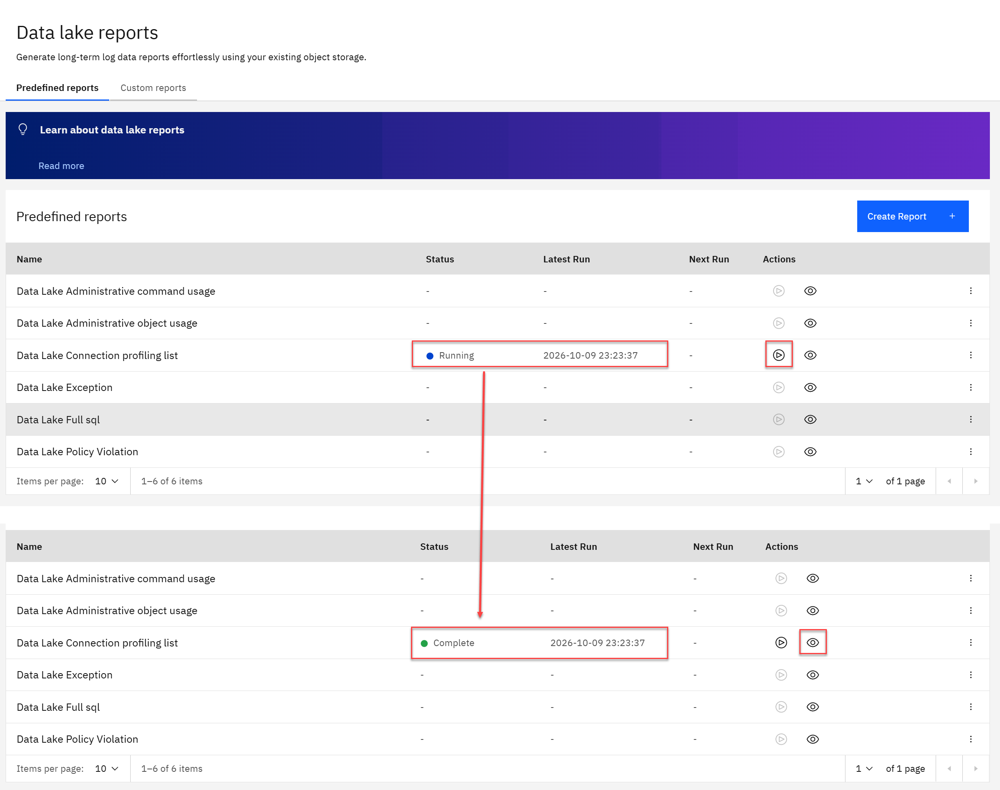
-
Review result and Close report window.
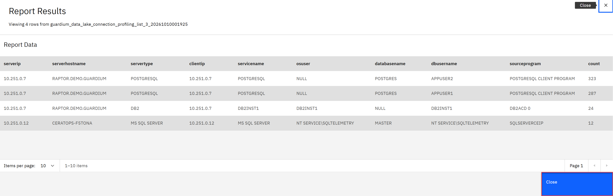


Appendix
Dependencies:
This lab requires that Oracle lab is fully covered before.
Resources:
Instructor notes: